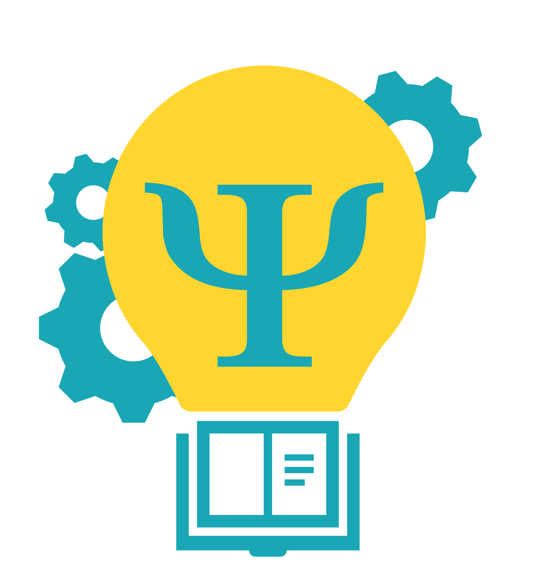

Patterns to Principles
Theory Construction in the Social Sciences
General Information

| Course name | From Patterns to Principles: Theory Construction in the Social Sciences |
| Instruction language | English |
| Type of instruction | Interactive lectures and group work |
| Level | Excellence Program TSB |
| Course load | 6 ECTS |
| Lectures | Dr. C. J. Van Lissa |
This course combines literature from empirical social science, methods and statistics, and philosophy to offer a multidisciplinary perspective on theory in the social sciences. There is no textbook: students will read and present on primary literature and discuss it in class. The course uses challenge based learning and a flipped classroom. While default challenges and corresponding materials are available, students are encouraged to bring their own, thereby connecting this course to their other coursework (or future thesis). The course relies on group work and explicitly allows for specialization (i.e., not all students need to master all course-relevant skills).
Learning objectives
This course introduces students to the foundations and applications of theory in social science research. We will analyze the need for better theories based on the current “theory crisis” in empirical social science. We define the characteristics and affordances of “good theories”: what do they look like, and how do we use them in (empirical) research? Students will engage with theory construction methods to formalize existing theories or construct their own, and are introduced to formal modeling and simulation studies as tools for theory development and testing. By the end of the course, students will be able to critically assess existing theories and their usage in empirical articles, construct theory, simulate theory-implied data, use theory in empirical research, and relate critically to the state of theory in the social sciences.
Skills
After taking this course, students are able to:
- Remember relevant constructs from the literature
- Understand theory construction methods and their philosophical pitfalls
- Apply theory in empirical research
- Create new - or formalize existing - theory
- Evaluate the use of theory in empirical research
Study Load
This is the breakdown of the expected study load:
Assessment
Your grade for the course is based entirely on your “portfolio”, comprised of the following components:
Group Work
For this course, we want to stimulate you to engage with the material, with one another, and with the teachers. Therefore, some portfolio assignments are made in groups. There are aspects of learning in groups that can really improve your knowledge, like discussion and peer feedback. Groups comprise 3-4 members and are created during the first tutorial session (Find a Group). We encourage students to reflect on their roles in group work, and to explicitly divide roles before each session or switch roles each week. At minimum, it’s useful to always have one Facilitator. If your group tends to be unanimous, appoint a Devil’s advocate. If your group tends towards disagreement, appoint an Arbitrator.
Course materials
You do not need a book for this course. This GitBook provides all relevant course materials, along with primary literature linked in the GitBook.
Course schedule
Always check the latest course schedule on TimeEdit. For an overview of the content, see below:
Communication
Communication about the course occurs through Canvas (Login with your student ID and password).
Staff
Coordinator/lecturer:
Lab sessions
Contact hours
This course consists of 8 lectures (HC) and 8 lab sessions (WC).
During the lectures, we mostly discuss the literature assigned for that week. Before each lecture, you will complete a small multiple choice exam (4 questions) about that week’s reading which contributes to your grade.
During the lab sessions you will work on applied exercises supervised by a teaching assistant. These exercises are always related to topics discussed during the lectures, and most of them contribute to your final assignment - either directly, or by teaching you skills to apply to your own assignment as part of the homework.
Software
The official software for this course is R, which you should install on your laptop as explained in Appendix A — Setup your Computer.